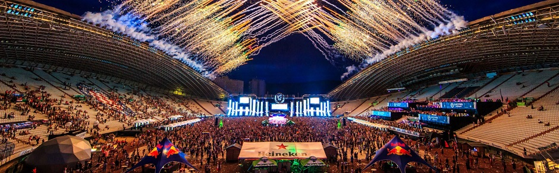

Wyjątkowe Festiwale Świata



Ultra Europe Festival
Ultra Europe to wielospadowy, odkryty festiwal muzyki elektronicznej, który jest częścią ekspansji światowej imprezy Ultra Music Festival, która rozprzestrzeniła się na całe Eupopie, Ultra Europe zadebiutowała jako dwudniowy festiwal w dniach 12-13 lipca 2013 r. I odbyła się w Split, Chorwacja, w dniu 14 lipca 2013 r., W ramach dodatkowej imprezy Ultra Beach w wyspie Hvar w Chorwacji. W 2015 r. Festiwal stał się częścią Destination Ultra, która trwa siedem dni w całej Chorwacji i obejmuje imprezę otwarcia, trzydniowy festiwal, regaty jachtowe, Ultra Beach i imprezę zamykającą.
Hardwell - Ultra Europe Festival Split, Chorwacja 2016